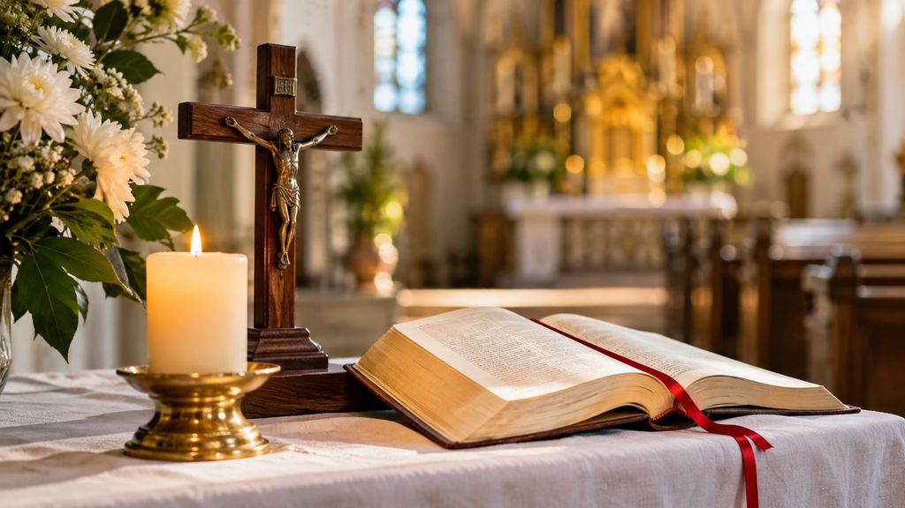

Pořad měsíce
Buďte stále v obraze
Přinášíme vám aktuální přehled bohoslužeb a dalších událostí v naší farnosti. Najdete zde informace o termínech, časech a místech konání.
Srdečně vás zveme ke společným setkáním a modlitbě.

PDF
Pořad měsíceFarní ohlášky 22. 11. – 6. 12. 2026
Otevřít
Další akce najdete v Aktualitách.